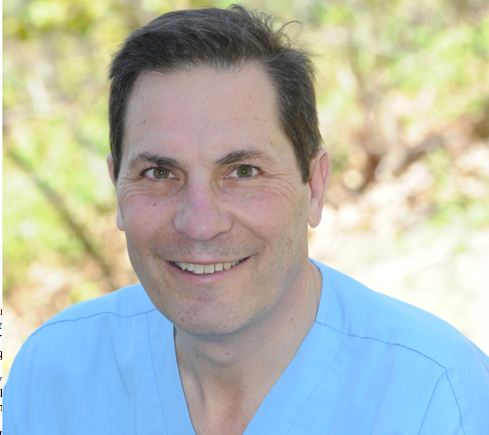

For over three decades, David R. Kerr, D.D.S. has had an established dental practice in the greater Portland area, and over this time, he has accumulated a substantial background of clinical experience and has seen a multitude of cases.
Dr. Kerr has determinedly kept up with the latest evidence-based dental research and innovations. He has an extensive education in formulating the correct clinical questions, searching for evidence, critical reading and appraisal of research studies, and implementing all of the above in his practice. He also utilizes computer data analytics in establishing his own proprietary clinical research.
Highly regarded in the community, Dr. Kerr is committed to improving dental health throughout the State of Maine. In 2011, he was awarded the “Oral Health Hero Award” by the Maine Access Coalition for his research in emergency room visits and dental pain.
For many years, he has been active in the Maine Dental Association, which supports dentists and public policy promoting dental health throughout the state of Maine. Dr. Kerr currently serves as Treasurer of the MDA, and has been a part of the following organizations and academies:
Dr. Kerr graduated from St. Lawrence University in 1974. He then graduated from the University of the Pacific in 1978 in San Francisco, and completed a General Practice Residency in New York City at the Long Island Jewish Hillside Medical Center.
Following his residency, he went to the University of Pennsylvania School of Dental Medicine, where he was an associate professor in the Department of Form and Function of the Masticatory System. He received a Master’s of Business Administration from the Wharton School at the University of Pennsylvania, majoring in Decision Science and Healthcare Policy.
He then attended the University of Connecticut School of Dental Medicine, where he was responsible for outpatient clinics, and taught medical and dental students in Biomedical Statistics.
Dr. Kerr was an appointee to the Forsythe Dental Institute in Boston, and has lectured at the Harvard School of Dental Medicine.
He moved to Maine in 1985, and is married to Dr. Carol Kerr, a clinical counselor. Together they have two adult sons in their twenties, both who live in Maine. His hobbies include anything outdoors: skiing, snowshoeing, sailing, hiking. He has three labradoodle dogs. Woof!
If you would like to schedule an appointment, call 207-775-0001 or email us at patientcare@drkerr.com. Our office is located in Portland, Maine.